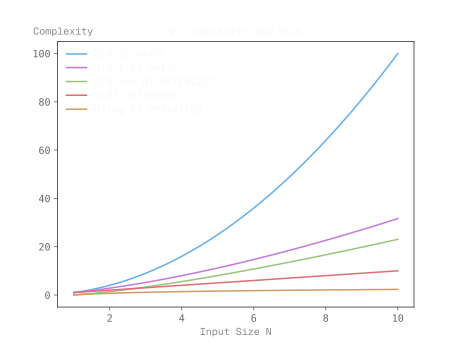

00_INTRODUCTION
This article establishes the "Technical Log" standard. Writing for a high-performance compute portfolio requires a balance of dense information and high scannability. By following these structural constraints, you ensure that complex research remains accessible to recruiters, peers, and professors.
01_ABSTRACT
Technical writing is rarely read linearly. Most users will "spot-check" your math and code before reading your prose. Therefore, your article must be modular.
- The Hook: Use the article-meta-data to prove the article is current and relevant.
- Every article must define its environment (e.g., $N=10^6$ particles, $T=300K$, or Hardware: RTX 4090).
- The Resolution: The conclusion should not just summarize, but point toward the next logical experiment.
02_PARAGRAPH_GEOMETRY
The "Goldilocks Zone" for line length on the web is between 45 and 75 characters. Your CSS handles the width, but you must handle the height.
- Vertical Rhythm: Aim for "breathing room." If a paragraph exceeds 6 lines, it creates a "visual wall" that discourages reading.
- Transitioning: Use your FIG components to break up long sections of text. A diagram acts as a mental reset for the reader.

03_TECHNICAL_INTEGRATION
When incorporating mathematics or code, the text surrounding it must serve as the "glue."
The Math-Text Sandwich:
Always introduce an equation with the variable definitions. For example: "Given a set of weights $w$ and a learning rate $\eta$, we update the parameters using:"
Then, immediately follow with an observation about the formula's behavior in your specific project context.
The Code Slice:
Do not include boilerplate code (imports, main functions). Only include the "Kernel" or the logic that solves the problem. Use Prism tags to ensure that keywords like __global__ or template are distinct from variables.
// CUDA Shared Memory Tiling Example
__shared__ float3 shPos[TILE_SIZE];
for (int tile = 0; tile < gridDim.x; tile++) {
shPos[threadIdx.x] = devicePos[tile * TILE_SIZE + threadIdx.x];
__syncthreads();
// Compute interactions using shared memory...
}glDrawElements instead of glDrawArrays to reuse vertices and save memory.
glDrawElements instead of glDrawArrays to reuse vertices and save memory.
04_REFERENCES_AND_CITATIONS
- [01] Harris, M. (2007). Optimizing CUDA: Shared Memory Tiling. NVIDIA Technical Report. link
- [02] Knuth, D. E. (1998). The Art of Computer Programming, Vol 3. Addison-Wesley.
- [03] Vasilache, N., et al. (2018). "Tensor Comprehensions." arXiv:1802.04730. doi:10.48550/arXiv.1802.04730